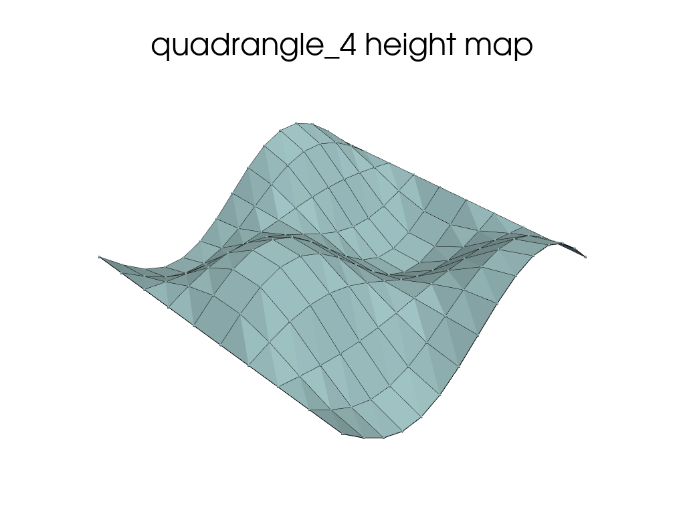
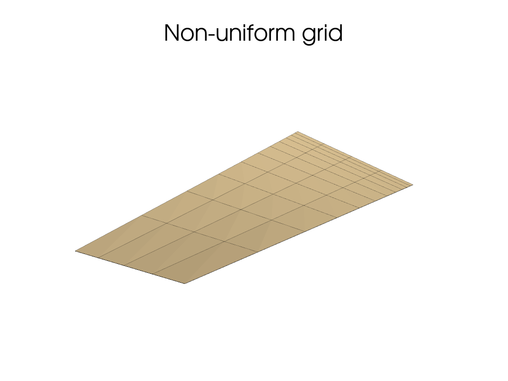
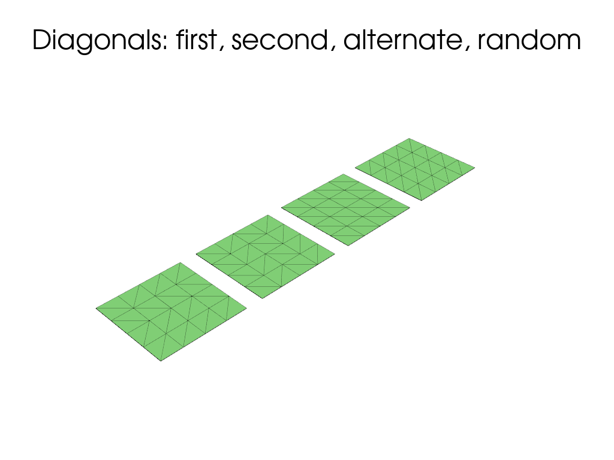
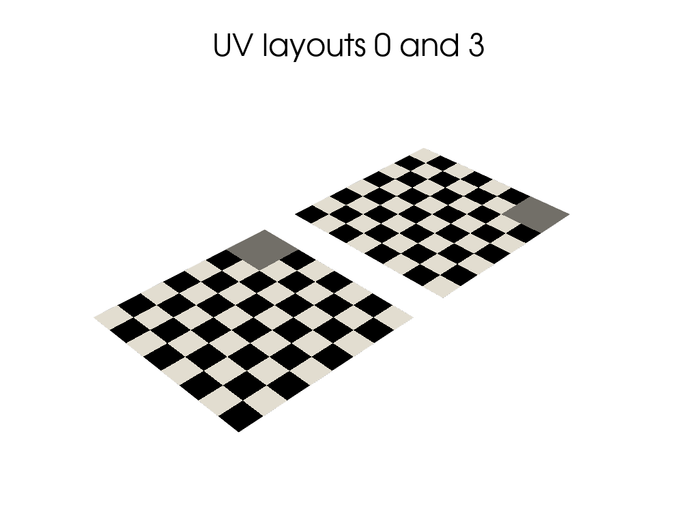
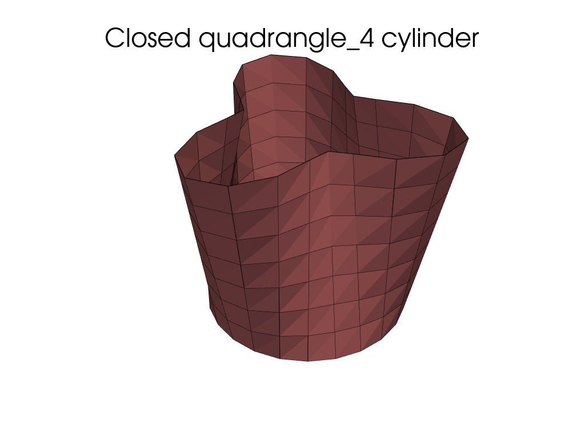
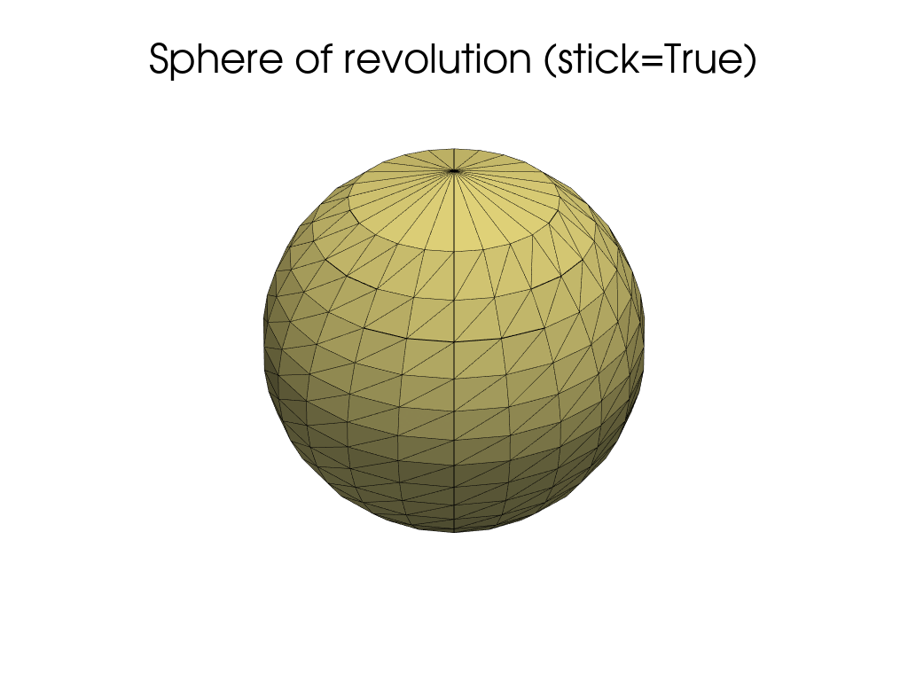
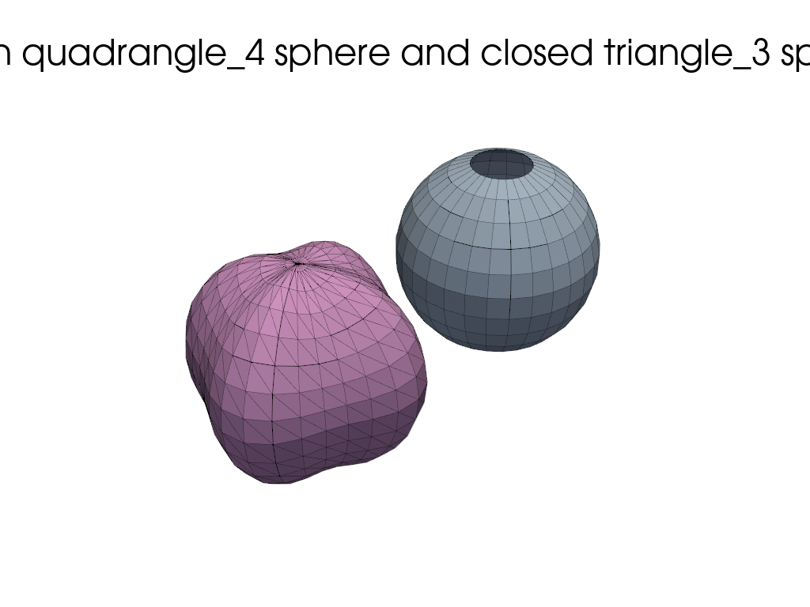

Note
Go to the end to download the full example code.
Creating 3D surface meshes#
The create_3d_* functions create 3D surface meshes (\(E = 3\)) of height maps,
cylinders and spheres, with quadrangle_4 or triangle_3 elements. All the meshes
have a UV map, so they can be textured.
See also
Creating 2D surface meshes for the 2D meshes (\(E = 2\)).
pysdic.quadrangle_4_to_triangle_3()for the conversion of quadrangles into triangles.
Height map#
A height map is a surface \(z = f(x, y)\). The function is called once with the 2D
grids of \(x\) and \(y\). n_x and n_y are numbers of vertices: the
vertex (i_x, i_y) is mesh.coordinates[i_y * n_x + i_x].
import numpy
from pysdic import Plotter3D, create_3d_quadrangle_4_heightmap
n_x, n_y = 15, 10
heightmap = create_3d_quadrangle_4_heightmap(
lambda x, y: 0.3 * numpy.sin(numpy.pi * x) * numpy.cos(numpy.pi * y),
x_bounds=(-1.0, 1.0),
y_bounds=(-1.0, 1.0),
n_x=n_x,
n_y=n_y,
)
print(heightmap)
print(f"Vertex (i_x=3, i_y=2): {heightmap.coordinates[2 * n_x + 3]}")
plotter = Plotter3D()
plotter.add_mesh(heightmap, face_color="lightblue", edge_color="black", vertex_size=4)
plotter.set_title("quadrangle_4 height map")
plotter.show()

Mesh(n_vertices=150, n_dimensions=3, n_elements=126, n_vertices_per_element=4)
- Element Type: 'quadrangle_4'
- Element property: 'uvmap' with shape (126, 8)
Vertex (i_x=3, i_y=2): [-0.57142857 -0.55555556 0.05078834]
Non-uniform grids are given with x_array and y_array instead of the bounds.
refined = create_3d_quadrangle_4_heightmap(
lambda x, y: 0.2 * x * y,
x_array=numpy.geomspace(0.1, 2.0, 12),
y_array=numpy.linspace(0.0, 1.0, 5),
)
plotter = Plotter3D()
plotter.add_mesh(refined, face_color="wheat", edge_color="black", show_vertices=False)
plotter.set_title("Non-uniform grid")
plotter.show()

From quadrangles to triangles#
Each quadrangle \(q\) is split into the triangles \(2q\) and \(2q + 1\)
along one of its diagonals. The vertices, the properties and the UV map are kept. The
meshes are displayed side by side with warp_by.
from pysdic import create_3d_triangle_3_heightmap, quadrangle_4_to_triangle_3
def shift(mesh, dx):
# Displacement of all the vertices along x (to display several meshes side by side)
return numpy.tile([dx, 0.0, 0.0], (mesh.n_vertices, 1))
small = create_3d_quadrangle_4_heightmap(x_bounds=(0.0, 1.0), y_bounds=(0.0, 1.0), n_x=5, n_y=5)
plotter = Plotter3D()
for i, diagonal in enumerate(["first", "second", "alternate", "random"]):
triangles = quadrangle_4_to_triangle_3(small, diagonal, seed=0)
plotter.add_mesh(triangles, warp_by=shift(triangles, 1.2 * i), face_color="lightgreen", edge_color="black", show_vertices=False)
print(f"{diagonal:>9}: first triangles {triangles.elements[:2].tolist()}")
plotter.set_title("Diagonals: first, second, alternate, random")
plotter.show()

first: first triangles [[0, 1, 6], [0, 6, 5]]
second: first triangles [[0, 1, 5], [1, 6, 5]]
alternate: first triangles [[0, 1, 6], [0, 6, 5]]
random: first triangles [[0, 1, 6], [0, 6, 5]]
pysdic.create_3d_triangle_3_heightmap() does both steps at once.
triangle_heightmap = create_3d_triangle_3_heightmap(
lambda x, y: 0.3 * numpy.sin(numpy.pi * x) * numpy.cos(numpy.pi * y),
x_bounds=(-1.0, 1.0),
y_bounds=(-1.0, 1.0),
n_x=n_x,
n_y=n_y,
diagonal="alternate",
)
print(triangle_heightmap)
Mesh(n_vertices=150, n_dimensions=3, n_elements=252, n_vertices_per_element=3)
- Element Type: 'triangle_3'
- Element property: 'uvmap' with shape (252, 6)
UV map and texture#
The UV map gives the texture coordinates of the vertices of each element. uv_layout
chooses which corner of the image goes to which corner of the grid (see
pysdic.create_uniform_quadrangle_4_mesh()): with the layout 0, the upper-left
corner of the image (in gray here) is at the vertex \((0, n_y - 1)\), and with the
layout 3 at the vertex \((0, 0)\) (the texture is flipped along \(y\)).
checkerboard = (255 * ((numpy.arange(256)[:, None] // 32 + numpy.arange(256)[None, :] // 32) % 2)).astype(numpy.uint8)
checkerboard[:64, :64] = 128 # Upper-left corner of the image
plotter = Plotter3D()
for i, uv_layout in enumerate([0, 3]):
mesh = create_3d_quadrangle_4_heightmap(x_bounds=(0.0, 1.0), y_bounds=(0.0, 1.0), n_x=10, n_y=10, uv_layout=uv_layout)
plotter.add_mesh(mesh, warp_by=shift(mesh, 1.2 * i), texture=checkerboard, show_edges=False, show_vertices=False)
plotter.set_title("UV layouts 0 and 3")
plotter.show()

Cylinders#
A cylindrical surface of axis \(z\) has a radius \(r = f(h, \theta)\) (for an
axisymmetric surface, ignore \(\theta\)). With close=True, the last and first
angles are connected: the angles must stop one step before \(2\pi\).
from pysdic import create_3d_quadrangle_4_cylindrical, create_3d_triangle_3_cylindrical
n_t = 24
closed_angles = (0.0, 2 * numpy.pi * (1 - 1 / n_t))
cylinder = create_3d_quadrangle_4_cylindrical(
lambda h, t: 1.0 + 0.2 * numpy.cos(3 * t) * h, t_bounds=closed_angles, h_bounds=(0.0, 2.0), n_t=n_t, n_h=8, close=True
)
print(cylinder)
plotter = Plotter3D()
plotter.add_mesh(cylinder, face_color="lightcoral", edge_color="black", show_vertices=False)
plotter.set_title("Closed quadrangle_4 cylinder")
plotter.show()

Mesh(n_vertices=192, n_dimensions=3, n_elements=168, n_vertices_per_element=4)
- Element Type: 'quadrangle_4'
- Element property: 'uvmap' with shape (168, 8)
With triangle_3 elements and stick=True, the vertices on the axis are merged and
the degenerate triangles removed: the surface of revolution \(r = \sqrt{1 - h^2}\)
with \(h \in [-1, 1]\) is a closed sphere.
sphere_of_revolution = create_3d_triangle_3_cylindrical(
lambda h, t: numpy.sqrt(numpy.clip(1.0 - h**2, 0.0, None)),
t_bounds=closed_angles,
h_bounds=(-1.0, 1.0),
n_t=n_t,
n_h=15,
close=True,
stick=True,
)
print(sphere_of_revolution)
print(f"Degenerate elements: {sphere_of_revolution.get_degenerated_elements_mask().sum()}")
plotter = Plotter3D()
plotter.add_mesh(sphere_of_revolution, face_color="khaki", edge_color="black", show_vertices=False)
plotter.set_title("Sphere of revolution (stick=True)")
plotter.show()

Mesh(n_vertices=314, n_dimensions=3, n_elements=624, n_vertices_per_element=3)
- Element Type: 'triangle_3'
- Element property: 'uvmap' with shape (624, 6)
Degenerate elements: 0
Spheres#
A spherical surface has a radius \(r = f(\theta, \phi)\), with the polar angle
\(\theta\) from the \(z\)-axis and the azimuthal angle \(\phi\). The
quadrangle_4 mesh is open at the poles. The triangle_3 mesh is closed by a
vertex at each pole (add_north and add_south, True by default), so its polar
angles must be strictly between 0 and \(\pi\).
from pysdic import create_3d_quadrangle_4_spherical, create_3d_triangle_3_spherical
n_p = 30
closed_azimuths = (0.0, 2 * numpy.pi * (1 - 1 / n_p))
open_sphere = create_3d_quadrangle_4_spherical(
t_bounds=(0.3, numpy.pi - 0.3), p_bounds=closed_azimuths, n_t=12, n_p=n_p, close=True
)
closed_sphere = create_3d_triangle_3_spherical(
lambda t, p: 1.0 + 0.1 * numpy.sin(4 * p) * numpy.sin(t),
t_bounds=(0.1, numpy.pi - 0.1),
p_bounds=closed_azimuths,
n_t=15,
n_p=n_p,
close=True,
)
print(open_sphere)
print(closed_sphere)
plotter = Plotter3D()
plotter.add_mesh(open_sphere, face_color="lightsteelblue", edge_color="black", show_vertices=False)
plotter.add_mesh(closed_sphere, warp_by=shift(closed_sphere, 2.5), face_color="plum", edge_color="black", show_vertices=False)
plotter.set_title("Open quadrangle_4 sphere and closed triangle_3 sphere")
plotter.show()

Mesh(n_vertices=360, n_dimensions=3, n_elements=330, n_vertices_per_element=4)
- Element Type: 'quadrangle_4'
- Element property: 'uvmap' with shape (330, 8)
Mesh(n_vertices=452, n_dimensions=3, n_elements=900, n_vertices_per_element=3)
- Element Type: 'triangle_3'
- Element property: 'uvmap' with shape (900, 6)
Total running time of the script: (0 minutes 1.066 seconds)